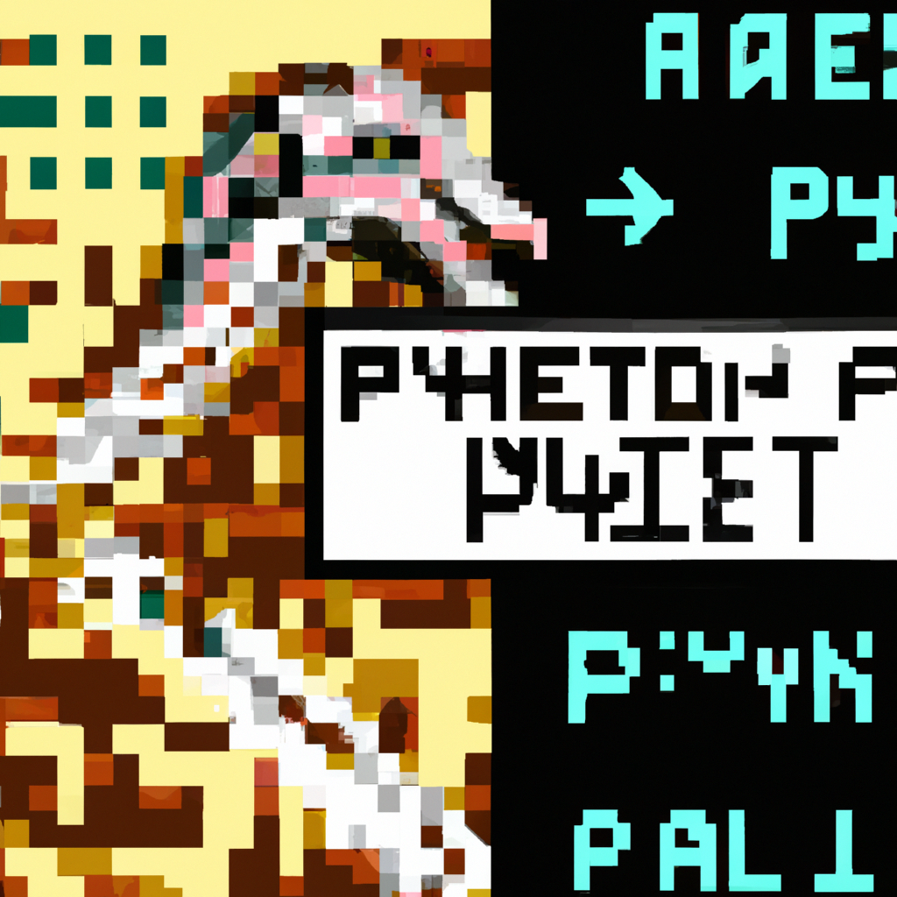

,
The future of python and AI
Python and Artificial Intelligence have become some of the most important technologies of the 21st century. Python has become the go-to language for many developers and Artificial Intelligence has become the foundation of many products and services. Python and Artificial Intelligence have been used in a wide range of applications from web development, to machine learning, to natural language processing, and more. In this blog post, we will explore the future of Python and Artificial Intelligence and how they will shape the world in the years to come.
Python is a powerful programming language that is versatile, easy to learn, and widely used. It is used in a variety of applications from web development to machine learning. Python’s popularity is also due to it being open source, meaning anyone can use it for free. Python has been used to create some of the most popular web frameworks such as Django and Flask, and it is the language of choice for many data scientists and machine learning engineers.
Artificial Intelligence is a technology that enables machines to learn from data and to make decisions without human intervention. It has been used in a wide range of applications from facial recognition, to natural language processing, to autonomous vehicles. AI is becoming increasingly popular as a result of its ability to process large amounts of data and to learn from it.
The future of Python and Artificial Intelligence is bright. Python and AI are being used in a wide variety of applications and will continue to be important in the years to come. Python and AI will be used to create products and services that are more efficient and effective. They will also be used to make decisions faster and with greater accuracy, and they will be used to automate processes that currently rely on manual labor.
Python and AI will also be used to create new and interesting products and services. For example, AI can be used to create personalized experiences for users and to enable products to better understand user needs. Additionally, AI can be used to create smarter robots and autonomous vehicles.
The future of Python and AI is very exciting, and it is clear that these technologies will have a major impact on our lives in the years to come. As more developers learn Python and use AI in their projects, the possibilities will become even greater.